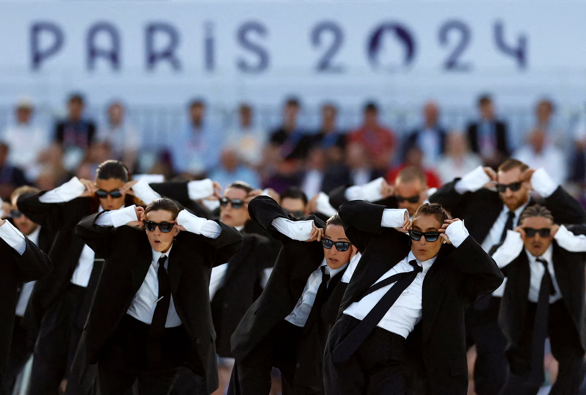
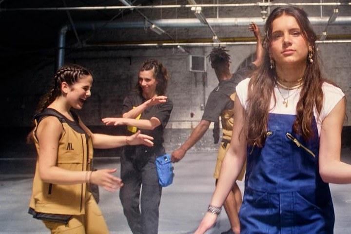
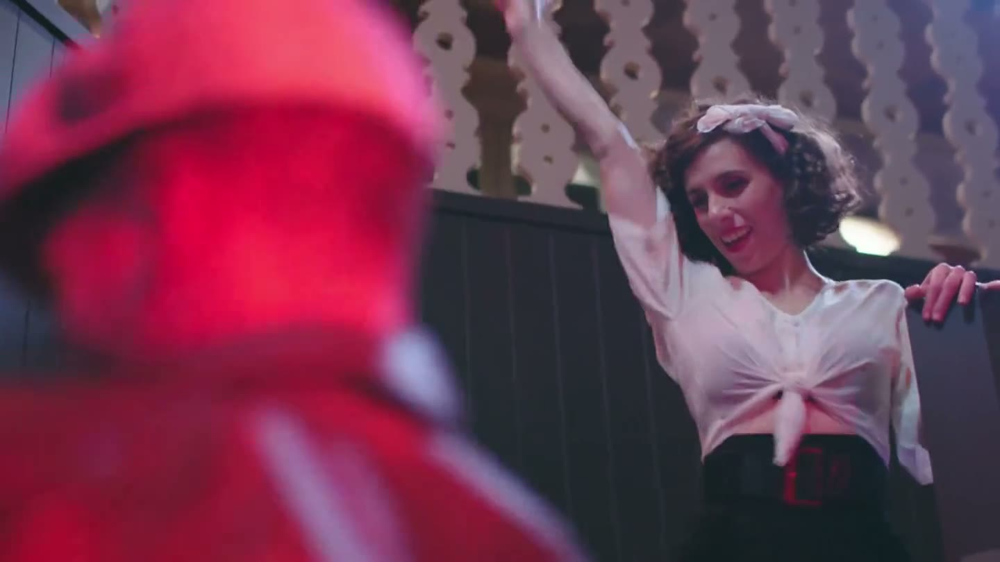
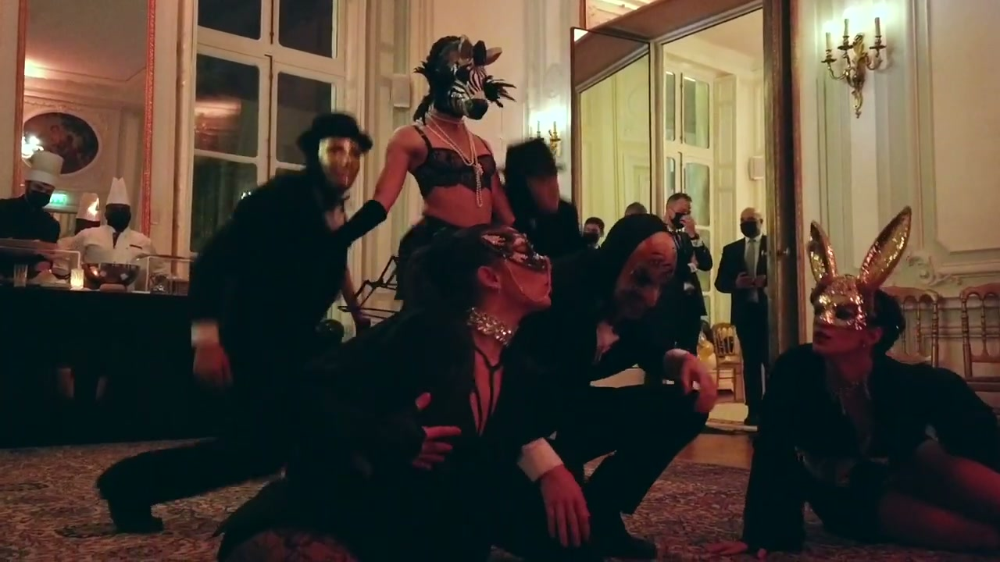
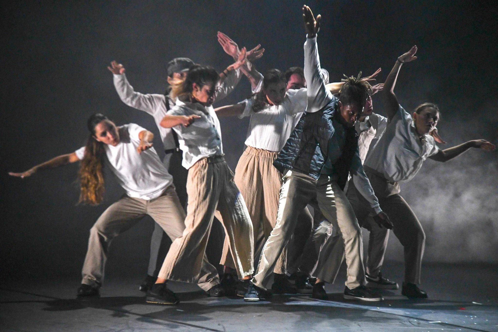

Performer
Performer
Interprète
Contemporaneo · Experimental
Contemporary · Experimental
Contemporain · Expérimental
Francia
France
France
Amo soprattutto il processo creativo: fare mia l’idea del coreografo.
Amo soprattutto il processo creativo:
fare mia l’idea del coreografo.
What I love most is the creative process: making the choreographer’s idea my own.
What I love most is the creative process:
making the choreographer’s idea my own.
J’aime avant tout le processus de création : m’approprier l’idée du chorégraphe.
J’aime avant tout le processus de création :
m’approprier l’idée du chorégraphe.




Scena
On stage
Scène
- Carmen · 75 représentationsProtagonista · Compagnie CTBLTitle role · Compagnie CTBLRôle-titre · Compagnie CTBL
- Palais des Festivals, CannesColoricocola · Machita Daly · Nagan Production
- Compagnie ReliefEncore en corps · Dominique Lisette
- Amman Contemporary Dance FestivalINequality · Compagnie Wected · spettacolo di aperturaINequality · Compagnie Wected · opening nightINequality · Compagnie Wected · en ouverture
Marchi
Brands
Marques
- Valentino
- Hermès
- LVMH
- Victoria’s Secret
- Nestlé
- Engie
- Caisse d’Épargne
- Innoha